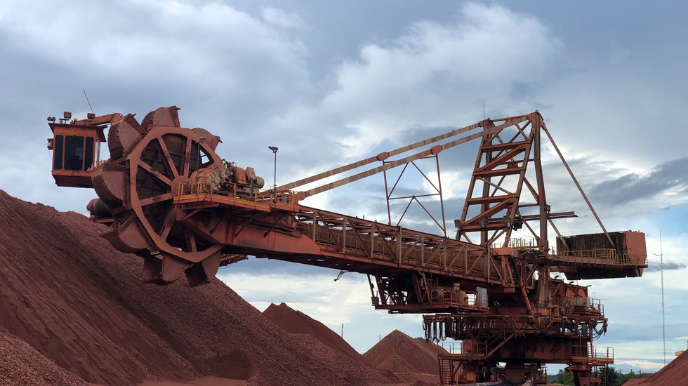

EQUIPAMENTO DE GRANDE PORTE
Os equipamentos de grande porte são equipamentos que trabalham na área de mineração, são: caminhões fora de estrada que transporta de 70 até 240 tonelada. Além deles existe outros equipamentos para fazer os carregamentos como: pá carregadeira elétrica, patrol e as estradas são extremamente largas. Os veiculos menores para acessar a área deles tem que se comunicar por via rádios, e manter a distância de 50 metros para eles ter a visibilidade melhor do veículos quanto nas laterais traseira e a frente. Na área da mineração tem a parte dos britadores para moer os minérios, depois de moido eles são transportado pela correia transportadora, daí continua na parte do carregamento que lá encontra outras máquinas de grandes portes que são retomadores e outras máquinas como a pá carregadeira para fazer carregamento nos vagões, de lá eles são transportado para o porto.
